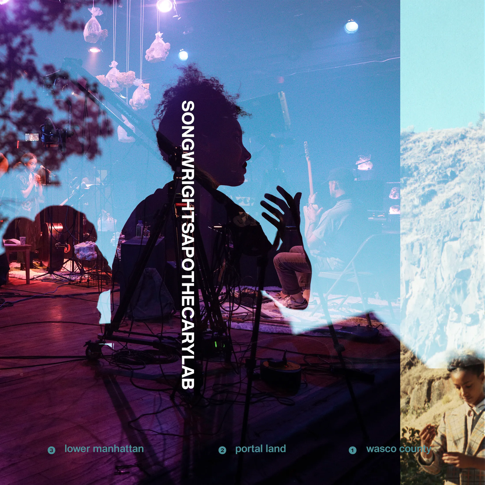

Christopher is Assistant Professor of Music Synthesis and Performance Technology at Western Carolina University where he leads the Music Technology Ensemble and directs the Studio for Performance Technology.
In 2024, Christopher also joined the academic faculty of Oregon State University where he teaches courses in electronic music.
He has taught courses at Harvard University focused on computer music programming from intermediate to advanced levels (both graduate and undergraduate students), as well as courses focused on songwriting and composition.
Christopher is available to teach private composition lessons in the Western North Carolina area. If you are interested in studying music production, electronic music, or music composition, please contact Christopher at chris.lock.music@gmail.com
Songwright's Apothecary Lab (Spring 2022)
I’ve had the great pleasure of teaching both undergraduate and graduate students from a wide array of backgrounds. My method of musical pedagogy centers around a holistic, hands-on approach which promotes the concept of well-rounded electronic musicianship.
In the Spring of 2022, I was the Teaching Fellow to multi-Grammy Award winning musician Esperanza Spalding for her course Songrwight’s Apothecary Lab. During this semester I worked intimately with Spalding and our students to develop an evening length concert of works in a wide range of musical styles from experimental Electroacoustic, to Pop, Hip-Hop, and Jazz.
One important concept I always try to instill in my students is that the music studio can be thought of as a kind of instrument. And, just like with a violin or guitar, the producer must work to develop their own sense of artistic personality and creative voice.


Advanced Electronic Music (Fall 2021)
In the Fall of 2021, Christopher was the Teaching Fellow to Prof. Hans Tutschku where he helped teach Advanced Electronic Music at Harvard. This course focused on instrument and installation development with Max/MSP and featured a final concert of multichannel audio. The course focused on spatial audio tools such as Spat (IRCAM) and Dante Virtual Soundcard which enabled students to realize sound through Harvard’s 40+ loudspeaker array, HYDRA.
Examples of student works:


healing wounds healings wounds healing wounds healings wounds healing wounds healings wounds healing wounds healings wounds healing wounds healings wounds healing wounds healings wounds healing wounds healings wounds healing wounds healings wounds healing wounds healings wounds